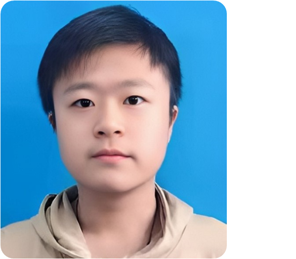
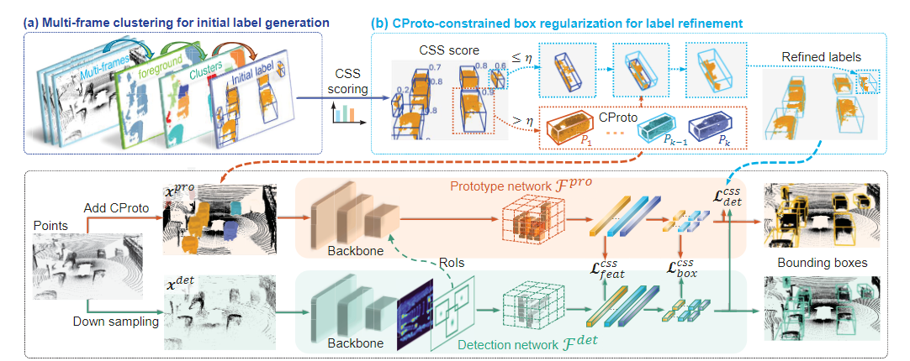

|  |
Ph.D. student at Xiamen University |
[Biography] [Latest News] [Publications] [Professional Activities] [Major Awards]
Biography [back top]
I am currently pursuing the Ph.D. degree with the School of Informatics, Xiamen University, Xiamen, China. My research interests focus on computer vision and machine learning, particularly in exploring machine learning for autonomous systems. This includes 3D scene understanding, object detection, and other topics related to autonomous driving.
Latest News [back top]
- 02/2024: Two paper is accepted by CVPR 2024
Publications [back top]
Conference
|  | Hai Wu, Shijia Zhao, Xun Huang, Chenglu Wen, Chenglu Wen✉, Xin Li, Cheng Wang
Commonsense Prototype for Outdoor Unsupervised 3D Object Detection CVPR, 2024 [paper] [code] |
 |
Qiming xia, Wei Ye, Hai Wu, Shijia Zhao, Leyuan Xin, Xun Huang, Jinhao Deng, Xin Li, chenglu Wen✉, Cheng Wang
HINTED: Hard Instance Enhanced Detector with Mixed-Density Feature Fusion for Sparsely-Supervised 3D Object Detection CVPR, 2024 [paper] [code] |
Professional Activities [back top]
Reviewer:
- IEEE Geoscience and Remote Sensing Letters (GRSL)
- Chinese Conference on Pattern Recognition and Computer Vision (PRCV 2023, 2024)
Major Awards [back top]
| Keep health and be well |